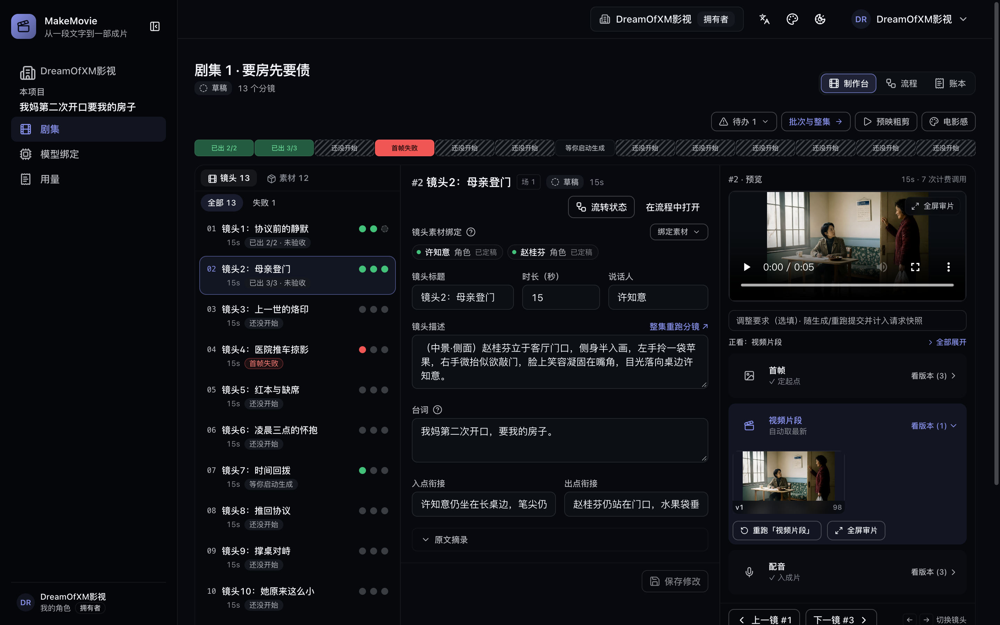
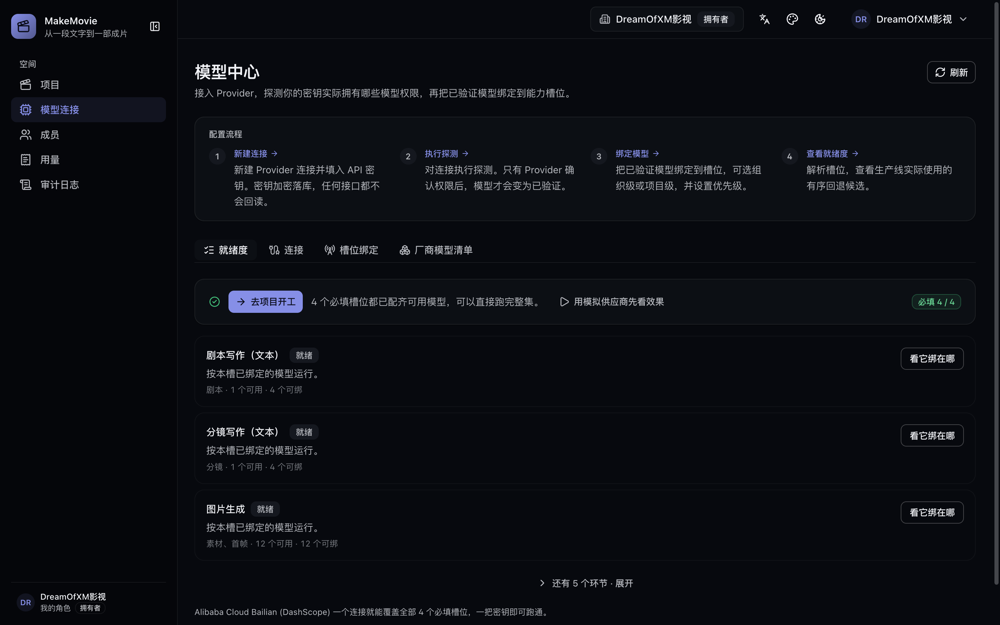

从一页故事，
到一集可交付的成片。
MakeMovie 收取一段原文——小说节选、故事梗概或剧本——交回一集成片母版：拍摄剧本、分镜清单、角色与道具参考图、首帧、视频片段、角色配音、背景配乐床、字幕轨与交付清单。文字阶段自行接力。每一个要花钱的阶段都等一个按钮。
看到真实计数之前，什么都不排队。批次启动前，控制台会写明它将创建多少任务、哪些分镜还缺输入——花费决策因此当场基于真实数字做一次，而不是事后在账单里发现。
git clone https://github.com/DreamOfXM/makemovie.git

我们相信，讲故事的门槛，不该由预算和团队规模决定。MakeMovie 想为每一位热爱视频制作的人提供一种新的可能：一个人、一台电脑，也能把心里的故事，做成一集拿得出手的成片。
提示框不给你的那部分
决定权始终在你手上。
生成是最容易的那一环。真正让一次生产散架的是没人做的那部分：这一刀谁批的、哪个版本进了剪辑、它消耗了你什么。
审批挡在花费前面
原文、剧本与参考图各有自己的审批动作，生产线在每一个要计费的阶段停下。重跑某个阶段是你有意的决定，运行中的批次可以在控制台停止——取消的是还没开始的任务，而不是让一个错误跑完。
花钱的阶段等一次点击
每个产物自带履历
每一版剧本、分镜、资产与媒体文件都记下产出它的任务、提示词、提供商、模型与质量检查。版本号按「分镜 + 阶段」保持一条连续序列，重跑给出 v2 而不是再铸一个 v1——被驳回的产物会写明它的理由。
任务 · 提示词 · 提供商 · 模型 · 评分
用量只报物理量，不报账单
账本只报可核查的物理量——计费调用次数、重抽次数、提示词字符、产物字节——按阶段、按模型。控制台与 API 里刻意没有任何金额字段，因为平台看不见你的厂商实际向你收多少。
调用 · 重抽 · 字符 · 字节
它跑在你跑的地方
你的 Postgres、你的 Redis、你的磁盘或 S3 桶、你的密钥——落盘加密，且任何读取接口都不会回传它。应用里没有埋点或遥测代码：唯一的外发调用只指向你绑定的模型厂商和你配置的存储端点。
docker compose up -d
对照同类
生成器交给你片段，这里交给你一集。
头部产品与高星开源工具都擅长用一句提示做出一段内容——一键出片的需求是真实的。MakeMovie 从一段文字开始，到母版加一份剪辑列表结束，中间由人签字放行。
| 产品 | 你喂给它什么 | 跑在哪里 | 花费前的人工审批 | 每个产物的血缘 |
|---|---|---|---|---|
| MakeMovie | 小说节选、故事梗概或剧本 | 你自己的机器或服务器 —— Compose 栈，Apache-2.0 | 有 —— 内置在生产流程里 | 有 —— 任务、提示词、模型与评分 |
| LTX Studio | 剧本、概念、图像或视频 | 托管服务 | — | — |
| Runway | 每次生成一段提示或参考素材 | 托管服务 | — | — |
| HeyGen | 剧本或提示，数字人主导 | 托管服务 | 在其企业版页面写明 | 在其企业版页面写明 |
| 可灵 | 每个片段一段提示或图像 | 托管服务 | — | — |
| Pika | 每个工具一段提示或图像 | 托管服务 | — | — |
| MoneyPrinterTurbo | 一个主题或关键词——自动写文案、检索现成素材、配解说 | 你自己的机器——开源（MIT） | — | — |
| ShortGPT | 一个主题——自动化框架：LLM 写脚本、找素材、配音、自动剪辑 | 你自己的机器——开源（MIT，Python 框架） | — | — |
| NarratoAI | 现成的视频素材——AI 写解说词并自动剪辑成片 | 你自己的机器——开源，本地部署 | — | — |
MakeMovie
- 你喂给它什么
- 小说节选、故事梗概或剧本
- 跑在哪里
- 你自己的机器或服务器 —— Compose 栈，Apache-2.0
- 花费前的审批
- 有 —— 内置在生产流程里
- 每个产物的血缘
- 有 —— 任务、提示词、模型与评分
LTX Studio
- 你喂给它什么
- 剧本、概念、图像或视频
- 跑在哪里
- 托管服务
- 花费前的审批
- —
- 每个产物的血缘
- —
Runway
- 你喂给它什么
- 每次生成一段提示或参考素材
- 跑在哪里
- 托管服务
- 花费前的审批
- —
- 每个产物的血缘
- —
HeyGen
- 你喂给它什么
- 剧本或提示，数字人主导
- 跑在哪里
- 托管服务
- 花费前的审批
- 在其企业版页面写明
- 每个产物的血缘
- 在其企业版页面写明
可灵
- 你喂给它什么
- 每个片段一段提示或图像
- 跑在哪里
- 托管服务
- 花费前的审批
- —
- 每个产物的血缘
- —
Pika
- 你喂给它什么
- 每个工具一段提示或图像
- 跑在哪里
- 托管服务
- 花费前的审批
- —
- 每个产物的血缘
- —
MoneyPrinterTurbo
- 你喂给它什么
- 一个主题或关键词——自动写文案、检索现成素材、配解说
- 跑在哪里
- 你自己的机器——开源（MIT）
- 花费前的审批
- —
- 每个产物的血缘
- —
ShortGPT
- 你喂给它什么
- 一个主题——自动化框架：LLM 写脚本、找素材、配音、自动剪辑
- 跑在哪里
- 你自己的机器——开源（MIT，Python 框架）
- 花费前的审批
- —
- 每个产物的血缘
- —
NarratoAI
- 你喂给它什么
- 现成的视频素材——AI 写解说词并自动剪辑成片
- 跑在哪里
- 你自己的机器——开源，本地部署
- 花费前的审批
- —
- 每个产物的血缘
- —
收录标准：这张表只收「把文字或素材自动变成成片」的同工种产品。模型权重仓库（Wan、Open-Sora、CogVideoX、HunyuanVideo……）、用代码写视频的渲染框架（Remotion、Revideo……）和字幕/翻译流水线（VideoLingo……）星数都不低，但它们是另外的工种，各有其强，不在同一张表里比。GitHub 上同类管线有几十个，这张表选的是各自路径上最有代表性的；想让某一个进来，提个 issue 说它该替换谁。
这张表怎么来的：2026 年 10 月 5 日，我们逐条读了各家自己的公开页面——LTX Studio 的 /studio、Runway 的 /enterprise、HeyGen 的首页与企业页、可灵与 Pika 的首页。破折号表示那一页没有写明，不是对软件本身的断言。LTX 确实以社区许可开放模型权重供本地与隔离网络部署，那是模型权重，不是它的 Studio 平台。
生产流程
八件事，按这个顺序发生。
每一件都是页面上的一个位置，而不是藏在背后的接口调用。你可以逐阶段走，也可以让文字阶段自行接力。
剧本
粘贴或上传原文、审批它，平台据此撰写拍摄剧本：场景、对白、说话人——用你为项目设定的内容语言，并按整集目标时长预算，口径是每分钟 350 个朗读字符。
- 整本小说按章节拆开；两枚一键预设会提出分集边界，之后仍可原地编辑。
- 编辑已审批的剧本会重算校验和并退回草稿，于是一次改动不可能绕过第二次审批。
角色、道具与场景
拆解阶段抽出出场的人与物，为每个资产建一张档案。它的参考图按项目的风格预设绘制，于是定妆照、画面与母版共用同一套色彩 DNA，而不是每一镜都在跟自己的参考图唱反调。
- 形象先由你审批才会被使用，声音绑定在角色身上而不是某句台词上。
- 文字里出现了人却没点名角色的分镜，会注入这些角色的已审批形象；没有绑定任何资产的分镜会被拦下，以免在一张没有形象锚点的画面上烧掉配额。
逐镜分镜
每个分镜携带自己的场景、空间锚点、台词与说话人、它出自原文的哪一句，以及进与出的衔接。台词是数据而非装饰：只有真正开口说话的分镜才欠一条配音任务。
- 制作台打开在「镜头」上而不是引擎阶段上——一条节奏条把整集画成一根横条，每一格按是谁在拿着这一镜上色。
先首帧，再运动
首帧由这一镜自己的文字与它绑定的参考图产出；绑定图生视频模型后，片段再从这张首帧出发。两者都是带计划任务数的批次，于是这一刀多大，你在按下之前就知道。
- 已审批的文字与真正的调用之间站着一层守卫链：从未点名视觉风格的提示词会追加项目风格；描述一连串动作的首帧提示词只告警，而不是被渲染成一张拼贴。
配音与配乐
声音属于角色：上传一段参考音频或直接在浏览器里录一段，给出其中所读的文本，此后该角色说的每一镜都从它取声——本集与后续各集都是。第一镜使用之前，绑定的声音可以当场试听。
- 本机引擎优先。说话角色已绑定声音时，worker 先试内嵌的 Qwen3-TTS MLX 引擎，再试本机 Voicebox，最后才回落到你绑定的云端 TTS。克隆跑在你自己的硬件上，需要 Apple Silicon 或 NVIDIA 显卡；控制台会检测芯片，检测不过时写明原因，而不是给你一个下载按钮。
- 每镜四种声音来源，都写进交付清单：合成配音、片段原生音频、两者叠加、你导入的音频文件——外加配音下面一条可导入的环境音轨，以及在对白下方自动闪避而不是与它抢的配乐。
评审，并钦定进剪辑的那一版
每个阶段的产出都保持可编辑，每次重跑都保留上一版。每一镜由你决定哪张首帧开场、哪个片段进剪辑、哪条配音被听见——合成读的是你的选择，而不是碰巧最新的那个文件。
- 每帧过质量闸门评分；被驳回的产物会展示失败的几次尝试与评审的扣分点，返工时把这些理由带进下一条提示词，而不是无方向盲抽。重抽上限是项目设置：1 到 3 次，默认 2 次。
- 归因不说谎：因为厂商免费额度耗尽而死掉的任务报成额度，而不是报成「评审没看上」。
- 预映在浏览器里用已有产物拼出一条静音粗剪，于是在为缺失部分花钱之前，你就能感觉到整集的节奏。
母版、字幕与交接
FFmpeg 剪出单集母版：每个分镜贡献自己成功的片段，台词音频按该镜实测时长补齐或裁齐，对白以软字幕轨承载，画面因此无需重编码。有台词却缺配音的分镜会挡住合成——但仅在已绑定语音模型之后，从未开通音频的部署仍可交付。
- 母版之外的剪辑交接：由同一份分镜清单生成 EDL 与 FCP XML 剪辑列表，整集可以交给真正的剪辑师收尾，而不是按生产线的剪法直接接受。
- 交付由验收闸门把关并版本化：一份 JSON 清单列出每个分镜的产物与校验和，与质量统计并列。合成未完成或仍有在线分镜缺少成功片段时，打包会被拒绝并给出原因。
- 交付文件携带 AI 生成内容标识，依中国 GB 45438-2025 生成合成内容标识规范；清单记录标识是否写入，未写入时记录降级原因——绝不静默通过。
九个模型槽位，和可信的就绪度
剧本文本、分镜文本、图像生成、视频（文生视频、图生视频、参考生视频）、语音、音乐与视觉审核。按组织绑成一条有序回退链，并可按项目覆盖。
- 槽位只在厂商自己确认之后才变成就绪：探测校验凭据本身，验证该模型按名字单独校验一个模型，而被点名拒绝的模型会撤销它的就绪标记。调不通的密钥永远不会被算成可用。
- 内置目录：阿里云百炼 / DashScope、火山方舟 Seedance、快手可灵、OpenAI、Google、Anthropic、面向私有端点的 OpenAI 兼容网关，以及一个 mock 提供商。单个 DashScope 连接即可覆盖全部 4 个必需槽位与所有可选槽位。
- 另外五个可选槽位缺的是产出，不是闸门：不绑语音剪出的是静音母版，不绑音乐没有配乐床，不绑视觉审核的画面会标注为未审核，而不是未经审视地通过。

安装
在你自己的机器上跑起来。
一个仓库，三条入口。下面每一条都抄自 README——如果这里某一步咬人，该读的是 README。
一切都进容器
用于评估或部署。Postgres、Redis、MinIO、API、worker 与控制台一起起来。
git clone https://github.com/DreamOfXM/makemovie.git
cd makemovie
cp .env.example .env # 然后设置 STUDIO_MASTER_KEY：
# openssl rand -hex 32
docker compose --profile full up -d --build
# 数据库迁移在 api 容器启动时自动执行，起来即用控制台在 http://localhost:3010，API 在 4010。国内网络拉不动镜像或依赖时，前面加 NPM_REGISTRY=https://registry.npmmirror.com。
应用留在宿主机
日常开发循环：依赖进容器，三个应用跑在本地，热重载还是你的。
pnpm install
cp .env.example .env
pnpm --filter @studio/db generate
pnpm build
docker compose up -d # postgres, redis, minio
pnpm db:migrate
pnpm dev # api :4010 · web :3010 · workerPostgres 与 Redis 对外发布在宿主端口 5433 与 6380，以免撞上你本机已有的安装。
零密钥走完全链
仓库自带 mock 提供商。把 mock-* 模型绑定到槽位，各阶段即以合成产物完成——不出网、不注册、不花钱。
模型中心 → 绑定：
mock-script mock-storyboard
mock-image mock-t2v mock-i2v
mock-tts mock-music mock-vlm装了 FFmpeg 的环境下，mock-tts 与 mock-music 生成真正可听的合成音而非占位文件，于是配音、配乐与字幕链路也能离线走完。它是测试替身，不是结果。
完整快速开始、配置参考与两种自托管模式都在 README 里。FFmpeg 负责剪出母版并写入标识，worker 镜像已经带了它。
常见问题
值得先问的几件事。
这跟 LTX Studio、Runway、HeyGen 有什么区别？
那些产品围绕一次生成构建：你描述一个镜头，它把它交回来。形状上最接近的是 LTX Studio——它同样讲述一条从概念到成片的路径，并提供分镜板、时间线与声音设计——但你购买的基本单位仍然是「一次生成」。
MakeMovie 的基本单位是一集。它从你拥有的一段文字开始，把台词按分镜保存为结构化数据，每个阶段挡在你的审批之后，结束时交出的是一份母版、一条字幕轨、剪辑列表与带校验和的清单。它还可自托管、Apache-2.0，上面几家都不是。今天只需要一个好片段，去用生成器；需要四十个片段凑成一集连贯的、有人能签字的内容，那是它的用途。
体验它需要 API Key 吗？
不需要。把内置的 mock 提供商绑到每个槽位，整条链就会跑完：剧本、拆解、资产、首帧、片段、配音、配乐、合成、交付。产出是合成的测试素材——mock-tts 与 mock-music 生成可听的声音而不是占位字节——所以它适合走通流程，不适合交出去。真实产出需要你绑定的模型，而那家厂商是在这个应用之外向你计费。
它会告诉我某件事花多少钱吗？
它会告诉你某件事消耗了什么：计费调用次数、重抽次数、提示词字符、产物字节，按阶段按模型，单集或整个项目。控制台与 API 里刻意没有金额字段——平台看不见你的厂商定价方案，而一个长得像账单的估算比没有更糟。
它在你花出去之前会做的：预审门写明任务数与仍缺输入的分镜，用量看板里有一行写着绑定的模型还剩多少次免费额度。
哪些部分还没做？
- 参考生视频槽位会像其他槽位一样列出并绑定，但链路还没消费它——片段由这一镜自己的首帧驱动，而不是由它的班底驱动。
- OpenAI、Google 与 Anthropic 三个适配器按厂商公开文档接线，并由对着桩化 HTTP 的契约测试覆盖。它们还没在真实账号上跑过，目录里每一条都这样写着。
- 音频质检停在响度地板：没有逐镜响度对齐，也没有把字幕烧进画面（而不是作为软字幕轨交付）的选项。
- 视觉审核的合格线固定在 70 分，尚未按真实视觉模型的评分校准。
- 深度内容审核——原文覆盖率、生成后的跨镜连续性——已被写进提示词，但还没有生成之后的验证环节。
可以多人一起用吗？
可以。多租户组织，五种角色（OWNER / ADMIN / EDITOR / REVIEWER / VIEWER），基于数据库的会话与 Argon2id 密码哈希，成员管理并在移除时吊销会话，以及一条完整审计日志记录状态流转与特权操作——每条动作都以人话标签呈现，而不是把内部标识符直接甩在界面上。
控制台本身提供中文与英文、深色与浅色主题。内容用哪种语言撰写是项目设置，与控制台的显示语言无关。
我的东西会离开这台机器吗？
只有你发给你绑定的模型厂商的那些调用，以及你把存储指向 S3 端点时的产物字节。MakeMovie 不训练模型，应用里没有埋点或遥测代码。提供商凭据以 AES-256-GCM 落盘加密，任何读取接口都不会回传它。
装起来，或者和我们一起建它。
一个仓库，Apache-2.0，没有付费档位，也没有托管版。这是一套还在生长的开源生产线——无论你热爱视频制作，还是热爱技术，都欢迎加入建设：提一个 issue 指出毛边，投一个 PR 把它修掉，或者写下你想要的工作流。目标只有一个：把它建成一套更友好、更灵活、能服务更多人的视频制作平台。
也要坦白一件事：受经费所限，本项目的测试还远谈不上彻底——真实模型、不同组合、各种边界，覆盖到的只是其中一部分。所以测试恰恰是最需要帮手的地方：用你自己的书跑一遍完整链路，换一个模型试试，拆一本长篇；撞见问题就提 issue，愿意的话顺手修掉再投个 PR。每一次这样的参与，都在替下一个人把路铺平。